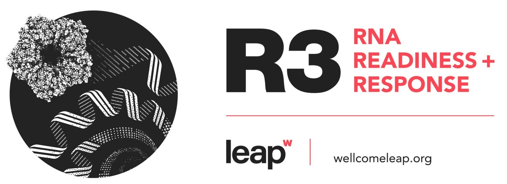

Our Research
Transforming RNA Vaccine and Therapeutics Manufacturing
Our cutting-edge research merges experimental and computational methods to revolutionize how RNA vaccines and therapeutics are produced. We're developing an advanced manufacturing platform that enables rapid, large-scale, and cost-effective production of RNA-based medicines—without compromising on quality.
To achieve this, we are integrating physical and digital technologies within a Quality by Digital Design framework, guided by rigorous techno-economic modelling. Our platform will provide powerful digital tools and computer models that directly link RNA product quality to specific steps in the production process—accelerating both process development and operation.
RNA platform technologies have already proven their potential during the COVID-19 pandemic, enabling vaccines to be developed and deployed at unprecedented speeds. Now, we’re pushing the boundaries further—scaling up production volumes and rates, reducing costs, and ensuring consistent quality across diverse applications.
Because RNA vaccines and therapeutics can be produced using a universal platform, the same infrastructure can be rapidly adapted to target multiple diseases. As global demand for flexible, high-quality RNA manufacturing grows, the technologies we are developing are poised to become a cornerstone of future biopharmaceutical production.
Key research areas
- Experimental mRNA vaccine and RNA therapeutics manufacturing process development: process intensification, continuous manufacturing and scale-up.
- Development and optimisation of continuous in vitro transcription (IVT) reaction for mRNA synthesis, continuous mRNA downstream purification processes based on continuous chromatography and tangential flow filtration unit operations, as well as continuous LNP formulation unit operations.
- Development of new unit operations and design of process equipment for mRNA manufacturing.
- We are developing high-performing processes for the production of not only messenger RNA (mRNA), but also circular RNA (circRNA) and self-amplifying RNA (saRNA).
- Process digitalisation: development of soft sensors and digital twins to monitor and control the manufacturing of RNA vaccines, RNA therapeutics and other biopharmaceuticals.
- Techno-economic modelling for reducing the costs, increasing production rates and increasing production volumes of RNA vaccines, RNA therapeutics and other biopharmaceuticals.
- Quality by Digital Design for consistently ensuring product quality, support scale-up, technology transfer, and for accelerating the regulatory approval process.
Publications
Our list of publications is available on the University of Sheffield webpage and on the Google Scholar page of Prof Zoltán Kis.
Research timeline
All grants spanning their funding period. Hover a bar for details.
We are grateful to our funders

Current grants
| Date | Funder | Role | Title | Funding amount |
|---|---|---|---|---|
| 1 Oct 2024 – 30 Sep 2027 | Coalition for Epidemic Preparedness Innovations (CEPI) | Principal Investigator | RNAboxTM: An automated continuous closed RNA platform process-in-a-box for rapid outbreak-response disease-agnostic RNA vaccine development and mass-manufacturing at high-quality and low-cost | £3.7 million (US $4.8 million) |
| 1 Apr 2024 – 31 Mar 2027 | Biotechnology and Biological Sciences Research Council (BBSRC) BB/Y007514/1 · Engineering Biology, Mission Awards |
Co‑Investigator | Electrospun mucoadhesive matrices for polymersome-mediated mRNA vaccine delivery | £2,382,846 |
| 1 Nov 2023 – 1 Nov 2028 | UK Department of Health and Social Care & Engineering and Physical Sciences Research Council (EPSRC) Hub, UK Vaccine Network |
Co‑Investigator | UK-south-east Asia-vaccine manufacturing research hub | £7.6 million |
| 1 Oct 2023 – 30 Sep 2027 | Engineering and Physical Sciences Research Council (EPSRC) Doctoral Training Partnership with RedShift BioAnalytics |
Co‑Investigator | Quantification of double-stranded mRNA impurities using microfluidics modulation spectroscopy | £130,000 |
| Jun 2023 | Biotechnology and Biological Sciences Research Council (BBSRC) BB/X018989/1 · ALERT 2022 |
Co‑Investigator | NanoAnalyzer: An emerging technology to analyse life at the nanoscale | £242,400 |
| 1 Oct 2023 – 30 Sep 2027 | Biotechnology and Biological Sciences Research Council (BBSRC) iCASE PhD studentship with AstraZeneca Plc |
Co‑Investigator | Synthetic Biology-Based Polymerase and Promoter Engineering for Production of Next-Generation RNA Therapeutics | £84,000 |
Previous grants
| Date | Funder | Role | Title | Funding amount |
|---|---|---|---|---|
| 1 Oct 2023 – 31 Mar 2026 | Innovate UK SBRI: Vaccine development for potential epidemic diseases, UK Vaccine Network |
Principal Investigator | Automated and digitalised RNA process-in-a-box for rapid outbreak-response disease-agnostic RNA vaccine/therapeutic development and manufacturing at high-quality and low cost | £2 million |
| 6 Dec 2021 – 30 Oct 2024 | Wellcome Leap RNA Readiness + Response (R3) |
Principal Investigator | Digitalised, small-scale and high-throughput process for distributed and automated RNA production for therapy and pandemic preparedness | Multi-million USD (confidential) |
| 1 Jan 2022 – 31 Jul 2022 | UK Research and Innovation (UKRI) Research England: HEIF — Covid Recovery |
Co‑Investigator | Innovating the process of RNA vaccine and therapeutic manufacturing – building external partnerships and exploring commercialisation opportunities | £74,331 |
| 20 Jul 2020 – 19 Jan 2022 | UK Research and Innovation (UKRI) EP/V01479X/1 · COVID-19 |
Co‑Investigator | Meeting the UK demand for COVID-19/SARS-CoV-2 vaccines via integrated manufacturing and supply chain optimisation | £445,000 |
| 1 Sep 2020 – 31 Aug 2022 | Wellcome Trust 220503/Z/20/Z · Innovator Awards |
Co‑Investigator | A pathway to a live-attenuated whole parasite malaria vaccine | £727,458 |
| 1 Sep 2020 – 31 Aug 2021 | Kidney Research UK Ref. 2548 · Paediatric Innovation |
Co‑Investigator | Cell catcher: developing a new method for cell isolation and preservation from urine samples of Bardet-Biedl Syndrome patients | £39,997 |